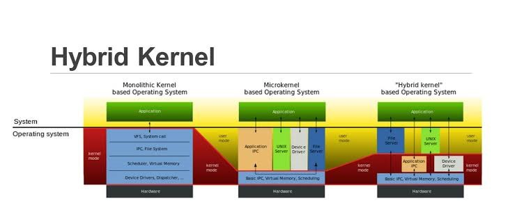

operating system design
Links:

It is quite complicated to define all the goals and specifications of the operating system while designing it.The design changes depending on the type of the operating system i.e if it is batch system, time shared system, single user system, multi user system, distributed system etc.There are basically two types of goals while designing an operating system. These are:User Goals
The operating system should be convenient, easy to use, reliable, safe and fast according to the users. However, these specifications are not very useful as there is no set method to achieve these goals.
System Goals
The operating system should be easy to design, implement and maintain. These are specifications required by those who create, maintain and operate the operating system. But there is not specific method to achieve these goals as well.
Operating System Mechanisms and Policies
There is no specific way to design an operating system as it is a highly creative task. However, there are general software principles that are applicable to all operating systems.
A subtle difference between mechanism and policy is that mechanism shows how to do something and policy shows what to do. Policies may change over time and this would lead to changes in mechanism. So, it is better to have a general mechanism that would require few changes even when a policy change occurs.
For example - If the mechanism and policy are independent, then few changes are required in mechanism if policy changes. If a policy favours I/O intensive processes over CPU intensive processes, then a policy change to preference of CPU intensive processes will not change the mechanism.
Operating System Implementation
The operating system needs to be implemented after it is designed. Earlier they were written in assembly language but now higher level languages are used. The first system not written in assembly language was the Master Control Program (MCP) for Burroughs Computers.
Advantages of Higher Level Language
There are multiple advantages to implementing an operating system using a higher level language such as: the code is written more fast, it is compact and also easier to debug and understand. Also, the operating system can be easily moved from one hardware to another if it is written in a high level language.
Disadvantages of Higher Level Language
Using high level language for implementing an operating system leads to a loss in speed and increase in storage requirements. However in modern systems only a small amount of code is needed for high performance, such as the CPU scheduler and memory manager. Also, the bottleneck routines in the system can be replaced by assembly language equivalents if required.